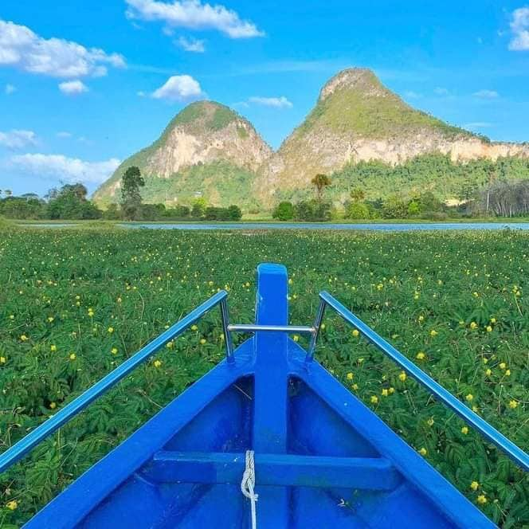

🌼 About My Hometown
Padang Besar is a peaceful northern town known for its culture, food, border market and warm-hearted people. A place where simple joy becomes meaningful memories.
Padang Besar town view
✨ Beautiful Places in Padang Besar✨

Wang Kelian
Known for its breathtaking sunrise and sunset also peaceful scenery.

Padang Besar Market
A lively border market full of food, clothes & unique items.

Gua Kelam
A magical cave with a beautiful walkway inside.

Tasik Timah Tasoh
A magical cave with a beautiful walkway inside.
🌅 Special Memory — Timah Tasoh Lake
A peaceful sunrise I captured at the beautiful Timah Tasoh Lake.
“No matter where life takes me,
my heart will always return
to the quiet beauty of my hometown.”
← Back to Home